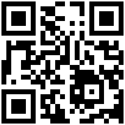

What is rhetor.us?
rhe·tor [ˈredər] noun (in ancient Greece and Rome) a teacher of rhetoric. an orator.
to·rus [ˈtôrəs] noun geometry a surface or solid formed by rotating a closed curve, especially a circle, around a line that lies in the same plane but does not intersect it (e.g., like a ring-shaped doughnut). architecture a large convex molding, typically semicircular in cross section, especially as the lowest part of the base of a column.
rhetor.us is a story about a shape that aims to make a point for all of US.